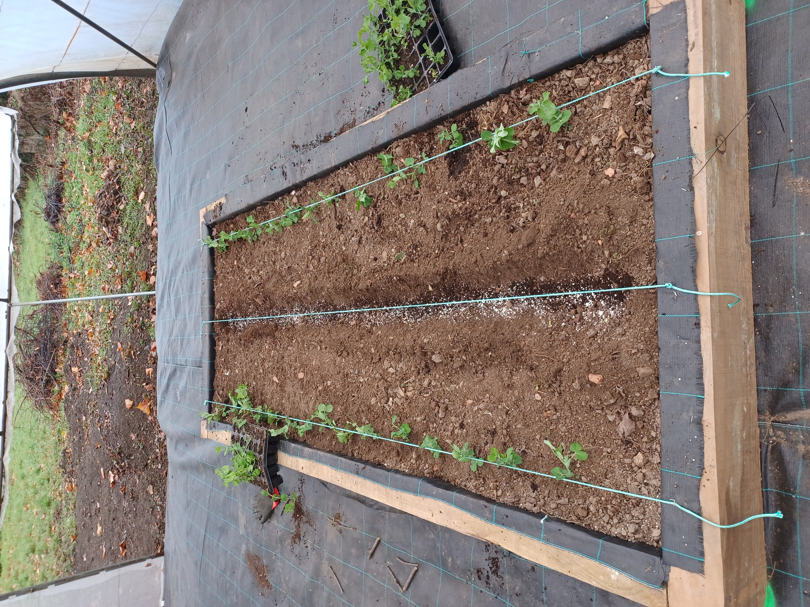
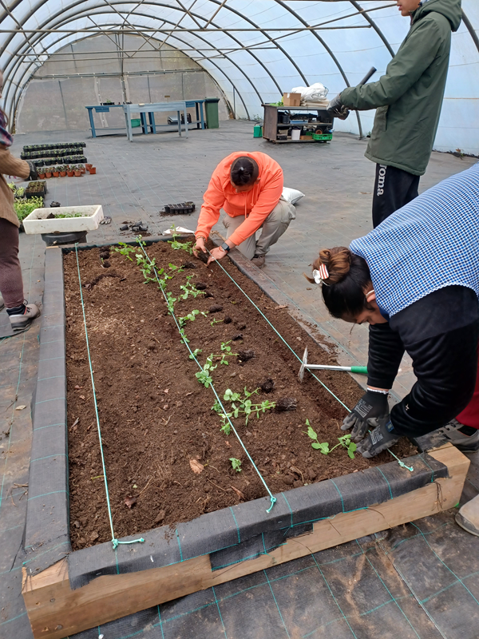

Vamos a plantar
Una vez hemos terminado los trabajos preliminares de preparación de suelo e invernadero, pasamos a trasplantar las plantas del semillero a su bancal correspondiente.


Una vez hemos terminado los trabajos preliminares de preparación de suelo e invernadero, pasamos a trasplantar las plantas del semillero a su bancal correspondiente.


Vamos a hacer una reflexión de todos los trabaos que hicimos en el semillero y por qué los hacíamos
¿Qué sembraste en tu semillero?
¿Qué crees que necesita la semilla para crecer?
¿Qué aprendiste al hacer el semillero?
Obra publicada con Licencia Creative Commons Reconocimiento Compartir igual 4.0